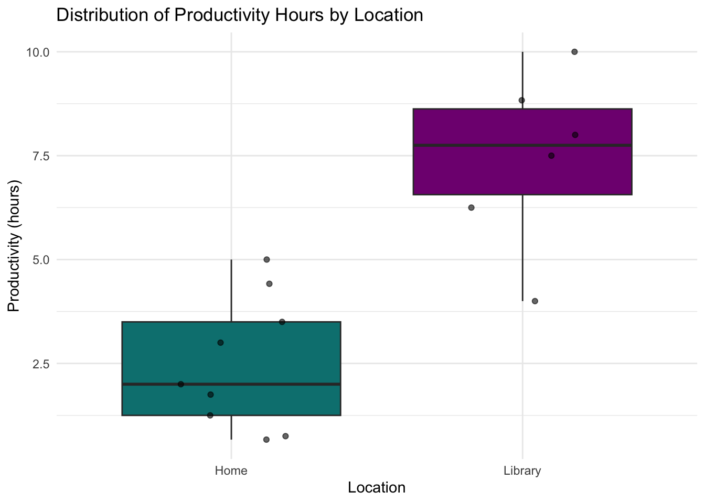
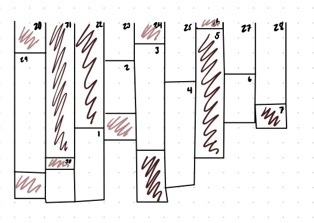
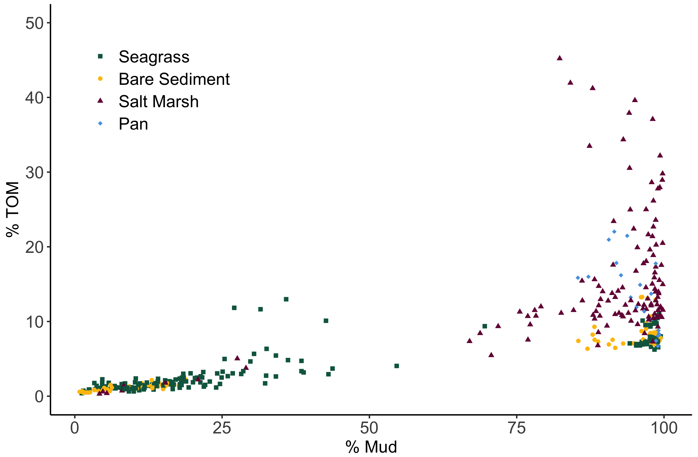

library(tidyverse)
library(here)
library(flextable)
library(janitor)
library(dplyr)Homework 3
GitHub Repository: https://github.com/bittnation/ENVS-193DS_homework-03.git
1 Set up
2 Problem 1. Personal Data
2.1 Data Summarizing
I could calculate the mean hours of productivity to compare between locations, such as home versus the library, because I suspect that my environment affects how focused I am. This comparison would help determine if studying in the library leads to longer or more productive work sessions than working at home.
2.2 Cleaning Data
personal_data <- read_csv("Personal_data_1.csv") #reading in data framepersonal_data_clean <- personal_data |>
clean_names() |>
filter(location %in% c("Home", "Library")) |> #filter to include only observations from home and library
select(hours_of_productivity_hh_mm, location) |> #selecting only the columns with data of interest
separate(hours_of_productivity_hh_mm, into = c("hrs", "mins"), sep = ":", convert = TRUE) |>
mutate(productivity_hours = hrs + mins / 60) #separating hours and minutes to calculate productivity in terms of hours2.3 Data Visulaization
ggplot(data = personal_data_clean, #choosing data set
aes(x = location,
y = productivity_hours,
fill = location)) + #setting axis
geom_boxplot() +
geom_jitter(height = 0, width = 0.2, alpha = 0.6) +
scale_fill_manual(values = c("Home" = "#008080", "Library" = "#800080")) + #choosing custom colors
theme_minimal() +
labs(title = "Distribution of Productivity Hours by Location", #giving plot a title
x = "Location", y = "Productivity (hours)") + #labeling axis
theme(legend.position = "none") #removing legend
Figure 1. Box plot showing the distribution of daily productivity hours by location. Each box represents the interquartile range (IQR) of productivity values, with the horizontal line indicating the median. Whiskers extend to values within 1.5 times the IQR, and individual points represent daily observations. Fill colors indicate study location: teal for Home (n = 7) and purple for Library (n = 8). Productivity hours were calculated by converting reported time values from HH:MM format to decimal hours.
2.4 Table presentation
summary_table <- personal_data_clean |> #creating summary data set
group_by(location) |> #grouping all values by location: Library or home
summarise(
n = n(), #including sample size
mean_productivity = round(mean(productivity_hours, na.rm = TRUE), 1),#calculating mean hours of productivity and rounding to one decimal point
sd_productivity = round(sd(productivity_hours, na.rm = TRUE), 1) # calculating standard deviation in hours and rounding to one decimal point
)
summary_table |> #putting calculated values into the format of a summary table
flextable() |>
set_header_labels( #labeling column headers
location = "Location",
n = "Sample Size (n)",
mean_productivity = "Mean Productivity (hours)",
sd_productivity = "SD (hours)"
) |>
autofit() |> # cleaning table format
set_caption("Table 1. Summary of productivity hours by location.") #captioning summary tableLocation | Sample Size (n) | Mean Productivity (hours) | SD (hours) |
|---|---|---|---|
Home | 9 | 2.5 | 1.6 |
Library | 6 | 7.4 | 2.1 |
Table 1. Summary of productivity hours by location
3 Problem 2. Affective Visualization
3.1 Description
My personal data affective visualization could be a strip based piece of art where each day is represented by a rectangle of various colors and sizes. The length of the strip would be representative of total hours of productivity, the longer the strip the more hours. The color of the strip would be representative of caffeine intake, darker colors indicate a higher caffeine intake and lighter colors indicate a lower caffeine intake. I would use a coffee inspired color palate to create an aesthetic connection to the data.
3.2 Visulaization sketch

3.3 Visulaization Draft

3.4 Artist Statement
This piece visualizes my daily productivity and caffeine intake over several weeks. The height of each strip represents how many hours I was productive that day, while the color intensity shows my caffeine intake. Icons indicate the location where I worked (home, library, lab, or other). I was inspired by Ed Hawkins’ climate stripes for their simplicity and emotional impact, and by Stefanie Posavec and Giorgia Lupi’s Dear Data project for using design to express personal routines. The final form piece is digital created using Canva. The overall process started with daily data collection of caffeine consumption, hours of productivity, date, and location. I used hours of productivity to calculate the length of each strip, Canva icons and text to provide context of date and location from each observation, and finally I assigned 5 different coffee inspired shades to 5 different ranges of caffeine intake (in mg) to assign a color to each observation. Each row contains 9 observations with different lengths creating an interesting and non-uniform pattern.
4 Problem 3. Statistical Critique
4.1 Figure + Summary

This figure depicts a scatter plot of total organic matter (TOM, %) against percent mud content across four habitat types present along the California Coast: sea grass, bare sediment, salt marsh, and pan. Each point along the graph represents an individual sediment sample, visually comparing TOM and grain size across habitats. A linear regression was used to test for a statistically significant relationship between TOM and grain size (% mud). The goal of this statistical analysis was to determine how sediment size influences accumulation of organic matter in different habitats along the California Coast.
4.2 Visual clarity analysis
Although the author made a clear description and analysis in the text, the figure itself doesn’t provide a clear visual representation of the model results. The figure lacks a regression line, R^2 value, and p-value. The figures ability to convey the outcome of the linear regression is limited due to the lack of these elements.
4.3 Aesthetic clarity analysis
This figure is ascetically clear; it is clean, easy to interpret, and straight forward. The data: ink ratio is high, the focus of the figure is to display individual data points and there are is no unnecessary visual clutter. The legend and shapes distinguishing habitat type aids in visual understanding without over complicating the figure.
4.4 Recommendations
To improve the figure, I recommend adding regression lines, and R^2 value, and p-values to clearly illustrate the significance and strength of relationships as described in the text. Without these visual elements the readers are forced to connect what they have read to the visualization instead of providing concise and informative figure. The author could even go further to include confidence intervals to demonstrate uncertainty. These added visual elements would allow the figure to standalone instead of relying on text to convey a summary of the data.